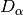

mapping.py¶
Module for mapping channels, channel heads, subcatchment segmentation, hillslope length (HSL), and filtered topographic aspect, and for analyzing azimuthal variations.
- Requires Python packages/modules:
- Imports
slmmodules:
Imports the Core class.
-
class
streamlines.mapping.Mapping(state, imported_parameters, geodata, preprocess, trace, analysis)¶ Class providing methods to map and characterize hillslope length (HSL) across a DTM.
These methods do the bulk of the hard work in mapping hillslope length, in linking to topographic aspect, and in measuring related statistics. The master method carries out three “passes” or processing steps in order to map the
slmgrids (sla, slt, slc) into grids of HSL and aspect, as well as to generate derivative data from them.-
preprocess¶ instance – of
Preprocessclass
-
cl_state¶ instance – of
Initialize_clclass
-
mapping_array¶ numpy.ndarray – map grid of uint32 pixel container values, each a set of flags using during mapping
-
merged_coarse_mask_array¶ numpy.ndarray – map grid of boolean pixel flags indicating if the pixel is masked after merging the set of coarsely subsegmented catchments
-
coarse_subsegment_array¶ numpy.ndarray – map grid of int32 pixel values of coarsely subsegmented catchment index
-
coarse_subsegments_list_array¶ numpy.ndarray – sorted list of int32 coarsely subsegmented catchment indexes
-
n_coarse_subsegments¶ int – number of unique values of coarsely subsegmented catchment indexes
-
hsl_array¶ numpy.ndarray – map grid of float32 pixel values of the estimated hillslope length (HSL)
-
hsl_mean_array¶ numpy.ndarray – list of float32 mean HSL values
-
hsl_stats_df¶ pandas.DataFrame – container for HSL analysis & statistics
-
aspect_array¶ numpy.ndarray – map grid of float32 pixel values of filtered topographic aspect aka hillslope azimuth
-
aspect_mask_array¶ numpy.ndarray – map grid of boolean pixel flags indicating if aspect computation is masked
-
channelhead_array¶ numpy.ndarray – map grid of boolean pixel flags indicating if at a channel head
-
midslope_array¶ numpy.ndarray – map grid of boolean pixel flags indicating if on a mid-slope band
-
ridge_array¶ numpy.ndarray – map grid of boolean pixel flags indicating if on a ridge
-
thinchannel_array¶ numpy.ndarray – map grid of boolean pixel flags indicating if on a ‘thinned’ channel
-
hsl_ns_ks¶ list – results of K-S test of HSL N-S anisotropy
-
hsl_ns_ks_nm¶ float – K-S test of HSL N-S anisotropy, partial 
-
hsl_ns_ks_nmfactor¶ float – K-S test of HSL N-S anisotropy, partial
-
hsl_ns_ttest¶ list – results of Student’s t-test of HSL N-S anisotropy
-
hsl_ns_mannwhitney¶ list – results of Mann-Whitney test of HSL N-S anisotropy
-
hsl_ns_ranksum¶ list – results of rank-sum test of HSL N-S anisotropy
-
hsl_ns_welch¶ list – results of Welch test of HSL N-S anisotropy
-
hsl_ns_min¶ float – HSL N-S minimum
-
hsl_ns_max¶ float – HSL N-S maximum
-
verbose¶ bool – general print verbosity flag
-
vbackup¶ bool – temporary print verbosity flag
-
vprogress¶ bool – progress print verbosity flag
-
__init__(state, imported_parameters, geodata, preprocess, trace, analysis)¶ Parameters: Initialize a mapping class instance.
Provides hooks to key classes in
geodata,preprocess,trace, andanalysismodules. Initializes the OpenCL device and a context, and creates a command queue. Initializes (nulls) HSL statistics attributes.
-
_augment(plot)¶ Parameters: plot (reference) – to PlotinstanceAdd a hook to the
Plotclass to facilitate debug graphing. Invoked instreamliningmodule, not here.
-
do()¶ Master method to carry out all three steps of HSL & related mapping and computation of statistics:
TBD TBD TBD TBD TBD TBD TBD TBD TBD
- Estimate the DTM-wide channel threshold and use it to coarsely subsegment into “moderate”-size watersheds - where “sub” means split into L and R flanks along channels
- Iterate over the coarse subsegments and in each:
- estimate the channel threshold
- map channels, ridges & midslopes
- measure HSL from either ridges or midslopes to channels
- merge the HSL and (TBD) channel mapping into “global” results grid(s)
- Filter the HSL results into a smoothed, contourable grid Compute filtered terrain aspect and combine with this HSL grid Generate a mean HSL(aspect) function and related statistics to determine whether or not there is a N-S bias
-
do_map_channels_segments(info, data, do_map_channels_from_scratch=True, do_map_segments=True)¶ TBD.
-
make_coarse_subsegment_masks(coarse_subsegment, is_left_or_right, raw_mask, dilated_mask)¶ Parameters: - coarse_subsegment (int) – index of coarse catchment subsegment
- is_left_or_right (str) – string-flag indicating if subsegment is left or right flank (“left” subsegments need dilation=2, “right” need dilation=1)
- raw_mask (numpy.ndarray) – empty grid for raw coarse subsegment mask
- dilated_mask (numpy.ndarray) – empty grid for dilated coarse subsegment mask
Create a boolean mask grid for the given coarse catchment subsegment. Returns masks in the raw_mask and dilated_mask grids by modifying in place. Computes bounding box (grid coords) of the dilated mask in bbox_dilated_mask and its dimensions nxd,nyd.
Returns: bbox_dilated_mask, nxd,nyd Return type: list, int, int
-
pass1()¶ Pass or stage 1 of HSL mapping.
Estimate the DTM-wide channel threshold and use it to coarsely subsegment into “moderate”-size watersheds. Note that the “sub” prefix means that each segment is split into left and right flanks along its channel, with an attempt made to subdivide symmetrically above each channel head (this is not always very successful).
- Key steps:
- Generate a mask that excludes non-mappable pixels; record its bounding box
- Map channels & catchments (sub)segments in a preliminary, coarse fashion
- Generate a mask that includes all coarse subsegment pixels
- Map mid-slope and ridge pixels using sla values only
-
pass2()¶ Pass or stage 2 of HSL mapping.
- Iterate over the coarse subsegments and in each:
- estimate the channel threshold
- map channels, ridges & midslopes
- measure HSL from either ridges or midslopes to channels
- merge the HSL and (TBD) channel mapping into “global” results grid(s)
-
pass3()¶ Pass or stage 3 of HSL mapping.
- Filter the HSL results into a smoothed, contourable grid.
- Compute filtered terrain aspect and combine with this HSL grid.
- Generate a mean HSL(aspect) function and related statistics to determine whether or not there is a N-S bias.
-
Code¶
"""
---------------------------------------------------------------------
Module for mapping channels, channel heads, subcatchment segmentation,
hillslope length (HSL), and filtered topographic aspect, and for analyzing azimuthal
variations.
---------------------------------------------------------------------
Requires Python packages/modules:
- :mod:`pandas`
- :mod:`sklearn.preprocessing`
- :mod:`skimage.morphology`
- :mod:`skimage.filters`
- :mod:`scipy.ndimage`
- :mod:`scipy.stats`
- :mod:`scipy.interpolate`
- :mod:`skfmm`
Imports ``slm`` modules:
- :mod:`.connect`
- :mod:`.channelheads`
- :mod:`.countlink`
- :mod:`.label`
- :mod:`.segment`
- :mod:`.hillslopes`
- :mod:`.lengths`
Imports the :class:`.Core` class.
Imports classes & functions from:
- :mod:`.useful`
- :mod:`.pocl`
---------------------------------------------------------------------
.. _pandas: https://pandas.pydata.org/
.. _sklearn: http://scikit-learn.org/
.. _skimage: https://scikit-image.org/
.. _scipy: https://www.scipy.org/
.. _skfmm: https://pythonhosted.org/scikit-fmm/
"""
import numpy as np
import pandas as pd
from cmath import rect, polar
import sklearn
from sklearn.preprocessing import normalize
from skimage.morphology import skeletonize, thin, medial_axis, disk
from skimage.filters import gaussian
from skimage.filters.rank import mean, median
from scipy.ndimage import gaussian_filter
from scipy.ndimage.morphology import binary_fill_holes, grey_dilation, \
binary_dilation, binary_erosion, \
generate_binary_structure
from scipy.stats import ks_2samp, mannwhitneyu, ranksums, ttest_ind
from scipy.interpolate import interp1d
import skfmm
import warnings
from os import environ
environ['PYTHONUNBUFFERED']='True'
from streamlines import connect, channelheads, countlink, label, \
segment, hillslopes, lengths
from streamlines.core import Core
from streamlines.useful import Data, Info, vprint, dilate, get_bbox, npamem
from streamlines.pocl import Initialize_cl
__all__ = ['Mapping']
pdebug = print
class Mapping(Core):
"""
Class providing methods to map and characterize hillslope length (HSL)
across a DTM.
These methods do the bulk of the hard work in mapping hillslope length,
in linking to topographic aspect, and in measuring related statistics.
The master method carries
out three "passes" or processing steps in order to map the ``slm`` grids
(sla, slt, slc)
into grids of HSL and aspect, as well as to generate derivative data from them.
Attributes:
geodata (instance): of :class:`.Geodata` class
preprocess (instance): of :class:`.Preprocess` class
trace (instance): of :class:`.Trace` class
analysis (instance): of :class:`.Analysis` class
cl_state (instance): of :class:`.Initialize_cl` class
mapping_array (numpy.ndarray): map grid of uint32 pixel
container values, each a set of flags using during mapping
merged_coarse_mask_array (numpy.ndarray): map grid of boolean pixel flags
indicating if the pixel is masked after merging
the set of coarsely subsegmented catchments
coarse_subsegment_array (numpy.ndarray): map grid of int32 pixel values of
coarsely subsegmented catchment index
coarse_subsegments_list_array (numpy.ndarray): sorted list of int32
coarsely subsegmented catchment indexes
n_coarse_subsegments (int): number of unique values of
coarsely subsegmented catchment indexes
hsl_array (numpy.ndarray): map grid of float32 pixel values
of the estimated hillslope length (HSL)
hsl_mean_array (numpy.ndarray): list of float32 mean HSL values
hsl_stats_df (pandas.DataFrame): container for HSL analysis & statistics
aspect_array (numpy.ndarray): map grid of float32 pixel values of
filtered topographic aspect aka hillslope azimuth
aspect_mask_array (numpy.ndarray): map grid of boolean pixel flags
indicating if aspect computation is masked
channelhead_array (numpy.ndarray): map grid of boolean pixel flags
indicating if at a channel head
midslope_array (numpy.ndarray): map grid of boolean pixel flags
indicating if on a mid-slope band
ridge_array (numpy.ndarray): map grid of boolean pixel flags
indicating if on a ridge
thinchannel_array (numpy.ndarray): map grid of boolean pixel flags
indicating if on a 'thinned' channel
hsl_ns_ks (list): results of K-S test of HSL N-S anisotropy
hsl_ns_ks_nm (float): K-S test of HSL N-S anisotropy,
partial :math:`D_\\alpha`
hsl_ns_ks_nmfactor (float): K-S test of HSL N-S anisotropy,
partial :math:`D_\\alpha`
hsl_ns_ttest (list): results of Student's t-test of HSL N-S anisotropy
hsl_ns_mannwhitney (list): results of Mann-Whitney test of HSL N-S anisotropy
hsl_ns_ranksum (list): results of rank-sum test of HSL N-S anisotropy
hsl_ns_welch (list): results of Welch test of HSL N-S anisotropy
hsl_ns_min (float): HSL N-S minimum
hsl_ns_max (float): HSL N-S maximum
verbose (bool): general print verbosity flag
vbackup (bool): temporary print verbosity flag
vprogress (bool): progress print verbosity flag
"""
def __init__(self,state,imported_parameters,geodata,preprocess,trace,analysis):
"""
Args:
state (instance): of :class:`.State` class
imported_parameters (dict): parameters dictionary loaded from
an ``slm`` :py:mod:`JSON <json>` file.
geodata (instance): of :class:`.Geodata` class
preprocess (instance): of :class:`.Preprocess` class
trace (instance): of :class:`.Trace` class
analysis (instance): of :class:`.Analysis` class
Initialize a mapping class instance.
Provides hooks to key classes in :mod:`.geodata`, :mod:`.preprocess`,
:mod:`.trace`, and :mod:`.analysis` modules.
Initializes the OpenCL device and a context, and creates a command queue.
Initializes (nulls) HSL statistics attributes.
"""
super().__init__(state,imported_parameters)
self.geodata = geodata
self.preprocess = preprocess
self.trace = trace
self.analysis = analysis
self.cl_state = Initialize_cl(self.state.cl_src_path,
self.state.cl_platform,
self.state.cl_device )
self.verbose = self.state.verbose
self.vbackup = self.state.verbose
self.vprogress = self.state.verbose
# Just in case of a problem, flag incomplete processing with empty objects
self.hsl_ns_ks_nm = None
self.hsl_ns_ks_nmfactor = None
self.hsl_ns_ks = None
self.hsl_ns_ttest = None
self.hsl_ns_mannwhitney = None
self.hsl_ns_ranksum = None
self.hsl_ns_welch = None
self.hsl_ns_min = None
self.hsl_ns_max = None
def _augment(self, plot):
"""
Args:
plot (reference): to :class:`.Plot` instance
Add a hook to the :class:`.Plot` class to facilitate debug graphing.
Invoked in :mod:`.streamlining` module, not here.
"""
self.plot = plot
def do(self):
"""
Master method to carry out all three steps of HSL & related mapping
and computation of statistics:
TBD TBD TBD TBD TBD TBD TBD TBD TBD
1) Estimate the DTM-wide channel threshold and use it
to coarsely subsegment into "moderate"-size watersheds
- where "sub" means split into L and R flanks along channels
2) Iterate over the coarse subsegments and in each:
- estimate the channel threshold
- map channels, ridges & midslopes
- measure HSL from either ridges or midslopes to channels
- merge the HSL and (TBD) channel mapping into "global" results grid(s)
3) Filter the HSL results into a smoothed, contourable grid
Compute filtered terrain aspect and combine with this HSL grid
Generate a mean HSL(aspect) function and related statistics
to determine whether or not there is a N-S bias
"""
self.print('\n**Mapping begin**')
if self.do_pass1:
self.pass1()
if self.do_pass2:
self.pass2()
if self.do_pass3:
self.pass3()
self.print('**Mapping end**\n')
def pass1(self):
"""
Pass or stage 1 of HSL mapping.
Estimate the DTM-wide channel threshold and use it
to coarsely subsegment into "moderate"-size watersheds.
Note that the "sub" prefix means that each segment is split
into left and right flanks along its channel, with an attempt made to
subdivide symmetrically above each channel head (this is not always
very successful).
Key steps:
1) Generate a mask that excludes non-mappable pixels; record its bounding box
2) Map channels & catchments (sub)segments in a preliminary, coarse fashion
3) Generate a mask that includes all coarse subsegment pixels
4) Map mid-slope and ridge pixels using sla values only
"""
vprint(self.vprogress,'\n**Pass#1 begin**')
# self._switch_to_quiet_mode()
# Shorthand
pad = self.geodata.pad_width
nxp = self.geodata.roi_nx+pad*2
nyp = self.geodata.roi_ny+pad*2
# Create arrays for mapping and coarse subsegmentation
self.mapping_array = np.zeros((nxp,nyp), dtype=np.uint32)
self.coarse_subsegment_array = np.zeros((nxp,nyp), dtype=np.int32)
self.merged_coarse_mask_array = np.ones((nxp,nyp), dtype=np.bool)
# Create an info object for passing parameters to CL wrappers etc
info = Info(self.state, self.trace, self.geodata.roi_pixel_size, mapping=self)
# Revert to 'dtm', 'basin' (if set), and 'uv' masks only
self.state.reset_active_masks()
# Generate a combined mask array from this set
mask_array = self.state.merge_active_masks()
# Find the bounding box of this mask and its x,y size
bbox, nxb, nyb = get_bbox(~mask_array)
# Record this bbox, its padding, its x,y size and the padded x,y size
# BUG - need boundary masking
info.set_xy(nxb,nyb, pad)
# Force coarse subsegmentation and related dummy channel thresholds
info.set_thresholds(channel_threshold=self.coarse_channel_threshold,
segmentation_threshold=self.coarse_segmentation_threshold)
# Create a data array container
# - these arrays are sliced from their source arrays bounded by the padded bbox
# - slicing bounds for simple arrays and for two-layer (up & downstream)
# arrays are recorded in data.bounds_grid and data.bounds_slx respectively.
data = Data( info=info, bbox=bbox, pad=pad,
mapping_array = self.mapping_array,
mask_array = mask_array,
uv_array = self.preprocess.uv_array,
slc_array = self.trace.slc_array,
slt_array = self.trace.slt_array,
sla_array = self.trace.sla_array )
# Map midslope lines
self.map_midslopes(info, data)
self.map_ridges(info, data)
# Do the forced coarse channel mapping & subsegmentation
# - the flag 'do_map_channels_from_scratch' will default to true
if not self.do_map_channels_segments(info, data):
self.print('A problem during mapping channels & segments')
# Save the coarse subsegmentation labels
# - inserted into full size grid arrays using the data.bounds_grid slice
self.mapping_array[data.bounds_grid] = data.mapping_array
self.coarse_subsegment_array[data.bounds_grid] = data.label_array
# Make a list of all the subsegments with enough ridge/midslope pixels for HSL
coarse_subsegments = np.unique(data.label_array[~data.mask_array])
self.coarse_subsegments_list_array \
= np.sort(coarse_subsegments[coarse_subsegments!=0])
self.n_coarse_subsegments = self.coarse_subsegments_list_array.shape[0]
# Make a mask to select all coarse subsegments
for label in self.coarse_subsegments_list_array:
self.merged_coarse_mask_array[self.coarse_subsegment_array==label] = False
# Copy the coarse subsegments so they can be readily visualized
# self.label_array = self.coarse_subsegment_array.copy()
# self._switch_back_to_verbose_mode()
del info, data
self.state.reset_active_masks()
# Map HSL
self.print('Prepare for mapping HSL from {}'.format(
('ridges' if self.do_measure_hsl_from_ridges else 'midslopes')))
mask_array = self.state.merge_active_masks()
bbox, nxb,nyb = get_bbox(~mask_array)
info = Info(self.state, self.trace, self.geodata.roi_pixel_size, mapping=self)
info.set_xy(nxb,nyb, pad)
info.set_thresholds(segmentation_threshold=self.fine_segmentation_threshold)
# Here data.bounds_grid is computed
data = Data( info=info, bbox=bbox, pad=pad,
mapping_array = self.mapping_array,
mask_array = mask_array)
# sla_array = self.trace.sla_array )
self.info = info
bounds = data.bounds_grid
# Should we zero out all but ridge & midslope flags?
# What about after pass#2 (keeping channel heads)?
self.mapping_array[bounds][~mask_array[bounds]] \
|= data.mapping_array[~mask_array[bounds]]
# Erase pass#1 channel heads
self.mapping_array[(self.mapping_array&info.is_channelhead)!=0]\
^= info.is_channelhead
self.mapping_array[(self.mapping_array&info.is_thinchannel)!=0]\
^= info.is_thinchannel
vprint(self.vprogress,'**Pass#1 end**')
def make_coarse_subsegment_masks(self, coarse_subsegment, is_left_or_right,
raw_mask, dilated_mask):
"""
Args:
coarse_subsegment (int): index of coarse catchment subsegment
is_left_or_right (str): string-flag indicating if subsegment is left or right
flank ("left" subsegments need dilation=2,
"right" need dilation=1)
raw_mask (numpy.ndarray): empty grid for raw coarse subsegment mask
dilated_mask (numpy.ndarray): empty grid for dilated coarse subsegment mask
Create a boolean mask grid for the given coarse catchment subsegment.
Returns masks in the raw_mask and dilated_mask grids by modifying in place.
Computes bounding box (grid coords) of the dilated mask in bbox_dilated_mask
and its dimensions nxd,nyd.
Returns:
list, int, int:
bbox_dilated_mask, nxd,nyd
"""
# Initialize raw mask with masked everywhere
raw_mask.fill(True)
# Unmask this coarse segment
raw_mask[self.coarse_subsegment_array==coarse_subsegment] = False
# Dilate this coarse segment mask by 2 if left or 1 if right flank
# - cos left dilation needs to grow to cover right-flank channel pixels
n = (2 if is_left_or_right=='left' else 1)
dilate(~raw_mask,n_iterations=n, out=dilated_mask)
np.invert(dilated_mask, out=dilated_mask)
# Shorthand
pad = self.geodata.pad_width
# Ensure dilated unmask does not encroach on boundary mask
dilated_mask[:pad,:] = True
dilated_mask[:,:pad] = True
dilated_mask[-pad:,:] = True
dilated_mask[:,-pad:] = True
# Define bbox and dimensions of the dilated mask
bbox_dilated_mask, nxd,nyd = get_bbox(~dilated_mask)
return bbox_dilated_mask, nxd,nyd
def pass2(self):
"""
Pass or stage 2 of HSL mapping.
Iterate over the coarse subsegments and in each:
- estimate the channel threshold
- map channels, ridges & midslopes
- measure HSL from either ridges or midslopes to channels
- merge the HSL and (TBD) channel mapping into "global" results grid(s)
"""
vprint(self.vprogress,'\n**Pass#2 begin**')
self._switch_to_quiet_mode()
# Shorthand
pad = self.geodata.pad_width
nxp = self.geodata.roi_nx+pad*2
nyp = self.geodata.roi_ny+pad*2
pixel_size = self.geodata.roi_pixel_size
# Count how many coarse subsegments need to be iterated over
n_segments = self.n_coarse_subsegments
self.print('Subsegment labels: {}'.format(n_segments))
# Mask off all but these coarse subsegments
self.state.add_active_mask({'merged_coarse': self.merged_coarse_mask_array})
# Initialize the full ROI-scale HSL grid and a buffer
# Also a mapping array for channels etc
raw_mask_array = np.zeros((nxp,nyp), dtype=np.bool)
dilated_mask_array = np.zeros((nxp,nyp), dtype=np.bool)
merged_mask_array = np.zeros((nxp,nyp), dtype=np.bool)
self.hsl_array = np.zeros((nxp,nyp), dtype=np.float32)
self.hsl_mean_array = np.array([], dtype=np.float32)
self.hsl_stats_df = None
# Iterate over the coarse subsegments
for idx,coarse_subsegment in enumerate(self.coarse_subsegments_list_array):
# for idx,coarse_subsegment in enumerate([71]):
if idx>0:
merged_mask_array.fill(False)
# if (coarse_subsegment)!=-4 and (coarse_subsegment)!=-3:
# continue
# Report % progress
self.report_progress(idx, n_segments, subsegment=coarse_subsegment)
# Revert to 'dtm', 'basin' (if set), and 'uv' masks only
self.state.reset_active_masks()
# Flag if this coarse subsegment is left or right flank
# - important because a left flank subseg omits the channel pixels
is_left_or_right = ('left' if coarse_subsegment<0 else 'right')
# Convert this coarse subsegment-labeled pixels into a mask
# - also dilate this pixel set and generate a wider mask
# to ensure flank-adjacent channel pixels are incorporated
# - dilate by 1 for R flank and by 2 for L flank to ensure this
bbox, nxb,nyb \
= self.make_coarse_subsegment_masks(coarse_subsegment, is_left_or_right,
raw_mask_array, dilated_mask_array)
# Create metadata container for this coarse subsegment
info = Info(self.state,self.trace, pixel_size, mapping=self,
coarse_label=coarse_subsegment)
info.set_xy(nxb,nyb, pad)
self.print('--- Mapping HSL on subsegment §{0} = {1}/{2} ({3})'
.format(coarse_subsegment,idx+1,n_segments,is_left_or_right))
# Deploy the dilated coarse-subsegment mask
self.state.add_active_mask({'dilated_segment': dilated_mask_array})
self.state.merge_active_masks(out=merged_mask_array)
self.print('Dilated coarse subsegment mask bounding box: {}'.format(bbox))
data = Data( info=info, bbox=bbox, pad=pad,
mapping_array = self.mapping_array,
mask_array = merged_mask_array,
uv_array = self.preprocess.uv_array,
slc_array = self.trace.slc_array,
slt_array = self.trace.slt_array,
sla_array = self.trace.sla_array )
# Compute slt pdf and estimate channel threshold from it
data.channel_threshold \
= self.analysis.estimate_channel_threshold(data, verbose=self.vbackup)
# Don't HSL map if there's a problem with channel threshold estimation here
if data.channel_threshold is None:
data.channel_threshold = self.guess_channel_threshold
# vprint(self.vprogress,' ---')
# continue
elif data.channel_threshold>self.max_channel_threshold:
data.channel_threshold = self.guess_channel_threshold
# vprint(self.vprogress,' ---')
# continue
elif data.channel_threshold<self.min_channel_threshold:
data.channel_threshold = self.guess_channel_threshold/2
# vprint(self.vprogress,' ---')
# continue
info.set_thresholds(channel_threshold=data.channel_threshold,
segmentation_threshold=self.fine_segmentation_threshold)
# Big step - map subsegments using above channel threshold
if not self.do_map_channels_segments(info, data):
del data
vprint(self.vprogress,' --- (problem mapping channels & subsegments)')
continue
data.mapping_array[(data.mapping_array & info.is_channelhead
==info.is_channelhead )] \
|= info.was_channelhead
# Map using FMM
self.select_subsegments(info, data, do_restrict=False)
if not self.measure_hsl_fmm(info, data) \
or not self.parse_hsl(info, data) \
or not self.remap_hsl(info, data, n_hsl_averaging_threshold=0):
del data
vprint(self.vprogress,' --- (problem measuring HSL using FM)')
continue
# # Map using streamlines
# self.select_subsegments(info, data)
# if not self.measure_hsl_traced(info, data) \
# or not self.parse_hsl(info, data) \
# or not self.remap_hsl(info, data):
# del data
# vprint(self.vprogress,' ---')
# continue
# if (coarse_subsegment)==-4 or (coarse_subsegment)==-3:
# self.plot.plot_distributions()
vprint(self.vprogress,
'\nChannel threshold = {0:0.1f}m'.format(data.channel_threshold))
vprint(self.vprogress,
'FMM mean HSL = {0:0.1f}m'.format(data.fmm_mean_hsl))
vprint(self.vprogress,
'Trace mean HSL = {0:0.1f}m'.format(data.trace_mean_hsl))
# Inefficient but simple
self.hsl_mean_array = np.append(self.hsl_mean_array,data.trace_mean_hsl)
# Eliminate almost certainly spurious count=1 HSL mean values
# data.hsl_stats_df = data.hsl_stats_df[data.hsl_stats_df['count']>1]
if self.hsl_stats_df is None:
self.hsl_stats_df = data.hsl_stats_df[
(data.hsl_stats_df['count']>1)
& (data.hsl_stats_df['mean [m]']>5.0)
].copy()
else:
self.hsl_stats_df = self.hsl_stats_df.append(
data.hsl_stats_df[
(data.hsl_stats_df['count']>1)
& (data.hsl_stats_df['mean [m]']>5.0)
])
# Remove this iteration's dilated coarse-subsegment mask
self.state.remove_active_mask('dilated_segment')
# Deploy this coarse subsegment's HSL data to the 'global' HSL map
self.print('Merging hillslope lengths...',end='')
# Use raw coarse mask to only keep HSL values actually on coarse subsegment
self.state.add_active_mask({'raw_segment': raw_mask_array})
self.state.merge_active_masks(out=merged_mask_array)
# Merge this coarse subsegment's HSL values into the 'global' HSL map
bounds = data.bounds_grid
data.hsl_array[np.isnan(data.hsl_array)] = 0.0
self.hsl_array[bounds][~merged_mask_array[bounds]] \
= data.hsl_array[~merged_mask_array[bounds]]
# Merge the channel mapping results for this coarse subsegment
# - which will allow recomputation of the entire channel network
# during pass#3
self.mapping_array[bounds][~merged_mask_array[bounds]] \
|= data.mapping_array[~merged_mask_array[bounds]]
# self.mapping_array[bounds] |= data.mapping_array & info.is_channel
# Delete this iteration's raw coarse mask from the active list
self.state.remove_active_mask('raw_segment')
# Erase the working instance of data to ensure
# that the next iteration starts fresh
del data
self.hsl_array[np.isnan(self.hsl_array)] = 0.0
self._switch_back_to_verbose_mode()
self.report_progress(idx+1, n_segments)
vprint(self.vprogress,'\n**Pass#2 end**')
def pass3(self):
"""
Pass or stage 3 of HSL mapping.
- Filter the HSL results into a smoothed, contourable grid.
- Compute filtered terrain aspect and combine with this HSL grid.
- Generate a mean HSL(aspect) function and related statistics
to determine whether or not there is a N-S bias.
"""
vprint(self.vprogress,'\n**Pass#3 begin**')
self.state.reset_active_masks()
self.state.add_active_mask({'merged_coarse': self.merged_coarse_mask_array})
mask_array = self.state.merge_active_masks()
bbox, nxb,nyb = get_bbox(~mask_array)
pad = self.geodata.pad_width
info = Info(self.state, self.trace, self.geodata.roi_pixel_size, mapping=self)
info.set_xy(nxb,nyb, pad)
info.set_thresholds(segmentation_threshold=self.fine_segmentation_threshold)
data = Data( info=info, bbox=bbox, pad=pad,
mapping_array = self.mapping_array,
mask_array = mask_array,
uv_array = self.preprocess.uv_array,
slc_array = self.trace.slc_array,
slt_array = self.trace.slt_array,
sla_array = self.trace.sla_array )
if not self.do_map_channels_segments(info, data,
do_map_channels_from_scratch=False,
do_map_segments=False):
self.print('Error occurred during channel mapping')
del data.mapping_array, data.slc_array, data.slt_array, data.sla_array
# Erase left flank flagging for easier viz of channels
# self.mapping_array[(self.mapping_array & info.is_leftflank)>0] \
# = self.mapping_array[(self.mapping_array & info.is_leftflank)>0] \
# ^ info.is_leftflank
# Revert to working on the whole DTM (ROI), mainly because
# extrapolation (dilation) into masked pixels needs to spread
# as far as needed, which is user-defined and may be quite large
# - thus not worth the trouble to add bboxing complexity here
nx = self.geodata.roi_nx
ny = self.geodata.roi_ny
nxp = nx+pad*2
nyp = ny+pad*2
info.set_xy(nx,ny, pad)
# Filter HSL into a contourable, somewhat smooth grid
self.map_hsl(info)
# Map smoothed terrain aspect aka orientation relative to east from uv array
self.map_aspect(info)
# Make 1-byte boolean arrays of selected mapping flags
self.thinchannel_array = np.zeros((nxp,nyp), dtype=np.bool)
self.channelhead_array = np.zeros((nxp,nyp), dtype=np.bool)
self.midslope_array = np.zeros((nxp,nyp), dtype=np.bool)
self.ridge_array = np.zeros((nxp,nyp), dtype=np.bool)
self.thinchannel_array[(self.mapping_array & info.is_thinchannel)>0] = True
self.channelhead_array[(self.mapping_array & info.is_channelhead)>0] = True
self.midslope_array[ (self.mapping_array & info.is_midslope)>0] = True
self.ridge_array[ (self.mapping_array & info.is_ridge)>0] = True
# Calculate an empirical HSL(aspect) function and related statistics
if not self.do_skip_hsl:
self.combine_hsl_aspect()
self.hsl_aspect_stats()
# self.state.remove_active_mask('merged_coarse')
self.info = info
vprint(self.vprogress,'**Pass#3 end**')
def do_map_channels_segments(self, info, data,
do_map_channels_from_scratch=True,
do_map_segments=True):
"""
TBD.
"""
try:
# Use downstream slt,sla pdfs to designate pixels as channels
if do_map_channels_from_scratch:
self.map_channels(info, data)
# Join up disconnected channel pixels if they are not too widely spaced
if not self.connect_channel_pixels(info, data):
return False
# Skeletonize channel pixels into thin network
self.thin_channels(info, data)
# Locate upstream ends of thinned channel network & designate as heads
if not self.map_channel_heads(info, data):
return False
# Link downstream from channel heads
if not self.count_downchannels(info, data):
return False
# Count downstream from channel heads
if not self.flag_downchannels(info, data):
return False
# Stop now if we're on pass3
if not do_map_segments:
return True
# Map locations of channel confluences & designate types
if not self.label_confluences(info, data):
return False
# Label channel segments with channel head idxs
if not self.segment_downchannels(info, data):
return False
# Designate downstream linkages for all hillslope pixels
if not self.link_hillslopes(info, data):
return False
# Label correspondingly upstream hillslope pixels
if not self.segment_hillslopes(info, data):
return False
# Designate as L or R of channel to subsegment hillslope flanks
if not self.subsegment_flanks(info, data):
return False
# Success
return True
except Exception as error:
# Failure
vprint(self.vbackup, 'Failed in "do_map_channels_segments":\n', error)
raise
# Redundant
return False
def _switch_to_quiet_mode(self):
self.state.verbose = False
self.verbose = False
def _switch_back_to_verbose_mode(self):
self.state.verbose = self.vbackup
self.verbose = self.vbackup
def report_progress(self, idx, n_segments, subsegment=None):
progress = ((idx)/n_segments)*100.0
if subsegment is not None:
vprint(self.vprogress, '{0:2.1f}% {1:+} '.format(progress,subsegment),end='')
else:
vprint(self.vprogress, '{0:2.1f}% '.format(progress),end='')
def map_channels(self, info, data):
self.print('Channels...',end='')
# Designate channel pixels according to dslt pdf analysis
slt = data.slt_array[:,:,0]
slc = data.slc_array[:,:,0]
# HACK slt*2>=slc
data.mapping_array[(slt>=info.channel_threshold) & (slt*2>=slc)]= info.is_channel
self.print('done')
def connect_channel_pixels(self, info, data):
return connect.connect_channel_pixels(self.cl_state,info,data,self.verbose)
def thin_channels(self, info, data):
self.print('Thinning channels...',end='')
nxp = info.nx_padded
nyp = info.ny_padded
mapping_array = data.mapping_array
channel_array = np.zeros((nxp,nyp), dtype=np.bool)
channel_array[ ((mapping_array & info.is_channel)==info.is_channel)
| ((mapping_array & info.is_interchannel)==info.is_interchannel)
] = True
self.print('skeletonizing...',end='')
skeleton_array = skeletonize(medial_axis(channel_array))
mapping_array[skeleton_array] |= info.is_thinchannel
self.print('done')
def map_channel_heads(self, info, data):
return channelheads.map_channel_heads(self.cl_state, info, data, self.verbose)
# HACK - this step used to be necessary - can it really be dropped?
# channelheads.prune_channel_heads(self.cl_state, info, data,
# self.verbose)
def count_downchannels(self, info, data):
nxp = info.nx_padded
nyp = info.ny_padded
data.count_array = np.zeros((nxp,nyp), dtype=np.uint32)
data.link_array = np.zeros((nxp,nyp), dtype=np.uint32)
return countlink.count_downchannels(self.cl_state, info, data, self.verbose)
def flag_downchannels(self, info, data):
return countlink.flag_downchannels(self.cl_state, info, data, self.verbose)
def label_confluences(self, info, data):
if not label.label_confluences(self.cl_state, info, data, self.verbose) \
or not countlink.flag_downchannels(self.cl_state, info, data, self.verbose) \
or not countlink.flag_downchannels(self.cl_state, info, data, self.verbose,
do_reset_count=False) \
or not countlink.flag_downchannels(self.cl_state, info, data, self.verbose,
do_reset_count=False):
# Three passes to try to eliminate all 'parasite' streamlets
return False
else:
return True
def segment_downchannels(self, info, data):
nxp = info.nx_padded
nyp = info.ny_padded
data.label_array = np.zeros((nxp,nyp), dtype=np.int32)
n = segment.segment_channels(self.cl_state, info, data, self.verbose)
if n==0:
return False
# Save the channel-only segment labeling for now; also convert to unsigned
data.channel_label_array = data.label_array.copy().astype(np.uint32)
return True
def link_hillslopes(self, info, data):
return hillslopes.link_hillslopes(self.cl_state, info, data, self.verbose)
def segment_hillslopes(self, info, data):
return segment.segment_hillslopes(self.cl_state, info, data, self.verbose )
def subsegment_flanks(self, info, data):
# Channel edges first, and then flanks
if not segment.subsegment_flanks(self.cl_state, info, data, self.verbose):
# Failure
return False
# data.label_array = data.label_array.astype(dtype=np.int32)
data.label_array[data.label_array<0] \
= -( data.label_array[data.label_array<0] + info.left_flank_addition )
# Flag all went well
return True
# Shift to pass#1
def map_midslopes(self, info, data):
self.print('Midslopes...',end='')
dsla = data.sla_array[:,:,0]
usla = data.sla_array[:,:,1]
mask = data.mask_array
nxp = info.nx_padded
nyp = info.ny_padded
midslope_array = np.zeros((nxp,nyp), dtype=np.bool)
# pdebug('self.midslope_filter_sigma', self.midslope_filter_sigma)
midslope_array[ (~mask) & (np.fabs(
gaussian_filter((np.arctan2(dsla,usla)-np.pi/4), self.midslope_filter_sigma))
<=self.midslope_threshold)] = True
data.mapping_array[skeletonize(midslope_array)] |= info.is_midslope
self.print('done')
def map_ridges(self, info, data):
self.print('Ridges...',end='')
dsla = data.sla_array[:,:,0]
usla = data.sla_array[:,:,1]
mask = data.mask_array
nxp = info.nx_padded
nyp = info.ny_padded
ridge_array = np.zeros((nxp,nyp), dtype=np.bool)
fat_ridge_array = np.zeros((nxp,nyp), dtype=np.bool)
ridge_array[ (~mask) & ((
gaussian_filter((np.arctan2(dsla,usla)-np.pi/4), self.ridge_filter_sigma))
<= -(np.pi/4)*self.ridge_threshold)] = True
dilation_structure = generate_binary_structure(2, 2)
binary_dilation(ridge_array, structure=dilation_structure,
iterations=2, output=fat_ridge_array)
binary_fill_holes(fat_ridge_array, output=fat_ridge_array)
# dilation_structure = generate_binary_structure(2, 2)
# binary_dilation(skeletonize(fat_ridge_array),
# structure=dilation_structure,
# iterations=5, output=ridge_array)
# data.mapping_array[ridge_array] |= info.is_ridge
# data.mapping_array[fat_ridge_array] |= info.is_ridge
data.mapping_array[skeletonize(fat_ridge_array)] |= info.is_ridge
self.print('done')
def select_subsegments(self, info, data, do_restrict=True):
self.print('Selecting subsegments for HSL mapping...',end='')
if do_restrict:
if self.do_measure_hsl_from_ridges:
flag = info.is_ridge
self.print('measuring from ridges...')
else:
flag = info.is_midslope
self.print('measuring from midslopes...')
data.subsegment_label_array = data.label_array[
# np.logical_and((data.mapping_array & flag)>0,~data.mask_array))
((data.mapping_array & flag)>0) & (~data.mask_array)
].astype(np.int32)
else:
data.subsegment_label_array = data.label_array[(~data.mask_array)
].astype(np.int32)
unique_labels = np.unique(data.subsegment_label_array)
data.selected_subsegments_array = unique_labels[unique_labels!=0].astype(np.int32)
self.n_subsegments = unique_labels.size
self.print('selected {}'.format(self.n_subsegments))
self.print('...done')
def fmm_lengths(self, info, data):
data.subsegment_hsl_array = np.zeros_like(data.selected_subsegments_array)
for idx,subsegment in enumerate(data.selected_subsegments_array):
phi_bool = np.zeros_like(data.label_array,dtype=np.bool)
phi_mod = np.zeros_like(data.label_array,dtype=np.int32)
mask = np.zeros_like(data.label_array,dtype=np.bool)
phi_bool[np.abs(data.label_array)==np.abs(subsegment)]=True
n_phi_pixels = phi_bool[phi_bool==True].size
n_erosions = 0
if n_erosions>0:
erosion_structure = generate_binary_structure(2, 1)
phi_bool_eroded = binary_erosion(phi_bool, structure=erosion_structure,
iterations=n_erosions)
phi_bool = phi_bool_eroded
n_dilations = 1
if n_dilations>0:
dilation_structure = generate_binary_structure(2, 1)
phi_bool_dilated = binary_dilation(phi_bool, structure=dilation_structure,
iterations=n_dilations)
phi_bool = phi_bool_dilated
phi_mod = phi_bool.astype(np.float32)
phi_mod[((data.mapping_array & info.is_thinchannel)==info.is_thinchannel)
& (np.abs(data.label_array)==np.abs(subsegment))]=-1
mask[phi_bool_dilated==0]=True
phi_mod = np.ma.MaskedArray(phi_mod, mask)
n_channel_pixels = phi_mod[phi_mod==-1].size
if n_channel_pixels==0:
continue
ratio_phi_channel = n_phi_pixels/n_channel_pixels
try:
distance = skfmm.distance(phi_mod, dx=self.geodata.roi_pixel_size)
# hsl = np.max(distance)
hsl = np.mean(distance)*2.0
if ratio_phi_channel>4.0:
data.subsegment_hsl_array[idx] = hsl
except:
pass
# self.plot.plot_gridded_data(phi_mod,'jet', #'randomized',
# do_colorbar=True, #mask_array=mask,
# do_balance_cmap=False, do_shaded_relief=False,
# extent=[0,phi_mod.shape[0],0,phi_mod.shape[1]],
# window_size_factor=2)
# self.plot.plot_gridded_data(distance,'jet', #mask_array=mask,
# do_colorbar=True,
# do_balance_cmap=False, do_shaded_relief=False,
# extent=[0,distance.shape[0],0,distance.shape[1]],
# window_size_factor=2)
# pdebug(data.subsegment_label_array.size,data.subsegment_hsl_array.size)
hsl_array = data.subsegment_hsl_array
# hsl_array = hsl_array[hsl_array>0.0]
if hsl_array[hsl_array>0.0].size>0:
data.fmm_mean_hsl = np.mean(hsl_array[hsl_array>0.0])
# pdebug('FMM HSL = {:.1f}m'.format(fmm_mean_hsl))
return True
else:
return False
def measure_hsl_fmm(self, info, data):
self.print('Measuring hillslope lengths using eikonal distance...')
data.subsegment_label_array = data.selected_subsegments_array
if not self.fmm_lengths(info, data):
return False
self.print('...done')
return True
def measure_hsl_traced(self, info, data):
self.print('Measuring hillslope lengths...')
data.subsegment_hsl_array = np.zeros_like(data.subsegment_label_array,
dtype=np.float32)
if not lengths.hsl(self.cl_state, info, data, self.do_measure_hsl_from_ridges,
self.verbose):
return False
self.print('...done')
return True
def parse_hsl(self, info, data):
self.print('Parsing hillslope lengths...')
n = data.subsegment_hsl_array.shape[0]
df = pd.DataFrame(np.zeros((n,), dtype=[('fine', np.int32),
('length', np.float32)]))
df['fine'] = data.subsegment_label_array
df['length'] = data.subsegment_hsl_array
# pdebug(df)
df = df[df.fine!=0]
try:
stats_df = pd.DataFrame(data.selected_subsegments_array,columns=['fine'])
stats_list = ( ('count','count'), ('mean','mean [m]'), ('std','stddev [m]') )
for stat in stats_list:
stats_df = stats_df.join( getattr(df.groupby('fine'),stat[0])(),
on='fine')
stats_df.rename(index=str, columns={'length':stat[1]}, inplace=True)
except:
self.print('Problem constructing HSL stats dataframe')
return False
stats_df['coarse']=info.coarse_label
stats_df.set_index(['fine','coarse'],inplace=True)
data.hsl_stats_df = stats_df
# pdebug(stats_df)
self.print('...done')
return True
def remap_hsl(self, info, data, n_hsl_averaging_threshold=None):
self.print('Remapping hillslope lengths onto grid...')
if n_hsl_averaging_threshold is None:
n_hsl_averaging_threshold = self.n_hsl_averaging_threshold
stats_df = data.hsl_stats_df
nxp = info.nx_padded
nyp = info.ny_padded
try:
data.hsl_array = np.zeros((nxp,nyp), dtype=np.float32)
for idx,row in stats_df.iterrows():
if row['count']>=n_hsl_averaging_threshold:
data.hsl_array[data.label_array==idx[0]] = row['mean [m]']
else:
data.hsl_array[data.label_array==idx[0]] = 0
except:
self.print('Problem with HSL stats dataframe')
return False
if stats_df.empty:
self.print('Unable to map HSL here - skipping')
return False
hsl_nonan = data.hsl_array[~np.isnan(data.hsl_array)]
hsl_nonan = hsl_nonan[hsl_nonan>=self.hsl_averaging_threshold]
if hsl_nonan.shape[0]==0:
self.print('No HSL values in dataframe - skipping')
return False
data.trace_mean_hsl = np.mean(hsl_nonan)
self.print('...done')
return True
def map_hsl(self, info):
self.print('Mapping hillslope lengths from {}...'.format(
('ridges' if self.do_measure_hsl_from_ridges else 'midslopes')),end='')
# Make a working copy of HSL and find limits
hsl = self.hsl_array
hsl_min = np.min(hsl)
hsl_max = np.max(hsl)
# Convert to unsigned 16bit so HSL can be filtered using skimage tools
hsl_clipped = (65535*(hsl-hsl_min)/(hsl_max-hsl_min)).astype(np.uint16)
# Get the current mask
mask_array = self.state.merge_active_masks()
# BUG ? perhaps we shouldn't slice off padding in hsl_smoothed?
pad = self.geodata.pad_width
pslice = np.index_exp[pad:-pad,pad:-pad]
# Sizes of dilation and mean filters in pixels
dfw = int(self.hsl_dilation_width/self.geodata.roi_pixel_size)
mdr = int(self.hsl_mean_radius/self.geodata.roi_pixel_size)
# Make a mean disk filter
mean_disk = disk(mdr)
# Spread HSL values into masked pixels by dilation
# - when contouring, this spreading has the effect of avoiding
# nasty mask-boundary edge effects, i.e., masked areas are treated
# as zeros and force dense erroneous contours to arise at boundaries
# Also mean filter to make for reasonably smooth contouring.
# - plus helps to skip over skinny isolated HSL strips with
# somewhat bogus extreme values.
with warnings.catch_warnings():
warnings.simplefilter("ignore")
if dfw==0:
hsl_dilated = hsl_clipped
else:
self.print('dilation with {0}m ({1}-pixel) width filter...'
.format(self.hsl_dilation_width,dfw), end='')
hsl_dilated = grey_dilation(hsl_clipped,size=(dfw,dfw))
hsl_dilated[~mask_array] = hsl_clipped[~mask_array]
self.print('mean filtering with {0}m ({1}-pixel) diameter disk...'
.format(self.hsl_mean_radius*2,mdr*2), end='')
hsl_mean = mean(hsl_dilated,mean_disk)
# Rescale filtered HSL back into floats
self.hsl_smoothed_array \
= ((hsl_mean.astype(np.float32))/65535)*(hsl_max-hsl_min)+hsl_min
self.print('done')
def map_aspect(self, info):
self.print('Computing hillslope aspect with median filter radii'
+' {0}m (slope), {1}m (uv)...'
.format(self.aspect_median_filter_radius,
self.uv_median_radius),end='')
nxp = info.nx_padded
nyp = info.ny_padded
slope_threshold = self.aspect_slope_threshold
# Copy the slope grid because we're going to monkey with it
slope_array = self.preprocess.slope_array.copy()
uv_array = self.preprocess.uv_array
mask_array = np.zeros((nxp,nyp), dtype=np.bool)
slope_array[((self.mapping_array & info.is_channel)==info.is_channel)] = 0.0
median_radius = self.aspect_median_filter_radius/self.geodata.pixel_size
if self.do_aspect_median_filtering:
sf = np.max(slope_array)/255.0
slope_array = sf*median(np.uint8(slope_array/sf),disk(median_radius))
median_disk = disk(self.uv_median_radius/self.geodata.pixel_size)
sf = 2.0/255.0
uvx_array = sf*median(np.uint8((uv_array[:,:,0]+1.0)/sf),median_disk)-1.0
uvy_array = sf*median(np.uint8((uv_array[:,:,1]+1.0)/sf),median_disk)-1.0
mask_array[ (slope_array<slope_threshold)
| ((self.mapping_array & info.is_channel)==info.is_channel) ] = True
# self.aspect_array = np.ma.masked_array( np.arctan2(uvy_array,uvx_array),
# mask=mask_array )
self.aspect_array = np.arctan2(uvy_array,uvx_array).astype(np.float32)
self.aspect_mask_array = mask_array
self.print('done')
def combine_hsl_aspect(self, n_bins=None, hsl_averaging_threshold=None):
self.print('Computing hillslope length-aspect function...',end='')
# Default to e.g. aspect bins 6° wide
if n_bins is None:
n_bins = self.n_aspect_bins
# HSL value below hsl_averaging_threshold will be ignored
if hsl_averaging_threshold is None:
hsl_averaging_threshold = self.hsl_averaging_threshold
# Shorthand
pad = self.geodata.pad_width
pslice = np.index_exp[pad:-pad,pad:-pad]
# Use basic masks plus the merged coarse-subsegmentation mask
self.state.reset_active_masks()
self.state.add_active_mask({'merged_coarse': self.merged_coarse_mask_array})
# Also exclude any np.ma masked pixels in self.aspect_array
# mask_array = self.state.merge_active_masks()[pslice] \
# | self.aspect_array[pslice].mask
mask_array = self.state.merge_active_masks()[pslice] \
| self.aspect_mask_array[pslice]
# Fetch non-masked aspect and HSL values
aspect_array = self.aspect_array[pslice][~mask_array]
hsl_array = self.hsl_smoothed_array[pslice][~mask_array]
# HACK!!!!
if hsl_array.shape==(0,):
print('here')
aspect_array = self.aspect_array[pslice]
hsl_array = self.hsl_smoothed_array[pslice]
# Convert aspect to degrees
np.rad2deg(aspect_array, out=aspect_array)
# Combine into HSL(aspect) array
# Exclude "negligibly" small HSL values aka near zero mismeasurements
hsl_aspect_array = np.stack( (hsl_array[hsl_array>=hsl_averaging_threshold],
aspect_array[hsl_array>=hsl_averaging_threshold]),
axis=1)
# Convert into a pandas dataframe for easier processing
self.hsl_aspect_df = pd.DataFrame(columns=['hsl','aspect'],
data=hsl_aspect_array[hsl_aspect_array[:,1].argsort()])
# Likely 3° bin half-width and 6° bin width
half_bin_width = 180/n_bins
bin_width = half_bin_width*2
# Vector of all bin edges, e.g., -183°,-177°,...,+177°,+183°
bins = np.linspace(-180,+180+bin_width,n_bins+2)-half_bin_width
# Group HSL values using degree-valued bin edges
self.hsl_aspect_df['groups'] = pd.cut(self.hsl_aspect_df['aspect'], bins)
# Average HSL values in each group
self.hsl_aspect_averages = self.hsl_aspect_df.groupby('groups')['hsl'].mean()
hsl = self.hsl_aspect_averages.values
# Force HSL(±180°) values to match
west_hsl = (hsl[0]+hsl[-1])/2.0
hsl[0] = west_hsl
hsl[-1] = west_hsl
# Convert bins to radians
bins = np.deg2rad(bins[:-1]+half_bin_width)
# Combine into average-HSL(aspect) array
self.hsl_aspect_averages_array = np.stack((hsl,bins),axis=1)
#
self.print('done')
def hsl_aspect_stats(self, n_bins=None, hsl_averaging_threshold=None):
self.print('Computing hillslope length-aspect statistics...',end='')
#
# Shorthand
haa = self.hsl_aspect_averages_array
hsl = haa[~np.isnan(haa[:,0]),0]
asp = haa[~np.isnan(haa[:,0]),1]
# Split into N and S HSL arrays
hsl_south_array = hsl[asp<=0.0]
hsl_north_array = hsl[asp>=0.0]
# If we have HSL() at +180° and -180°, don't repeat in mean
if -asp[0]==asp[-1]:
self.hsl_mean = np.mean(hsl[1:])
else:
self.hsl_mean = np.mean(hsl)
# Mean HSL north and south
self.hsl_mean_south = (np.mean(hsl_south_array) if hsl_south_array!=[] else 0.0)
self.hsl_mean_north = (np.mean(hsl_north_array) if hsl_north_array!=[] else 0.0)
# Disparity between north and south means
self.hsl_ns_disparity = np.abs(self.hsl_mean_north-self.hsl_mean_south)
self.hsl_ns_disparity_normed = self.hsl_ns_disparity/self.hsl_mean
# Overall HSL standard deviation
self.hsl_stddev = np.std(hsl)
# Split HSL(aspect) into n_hsl_split groups e.g. 4 to compute std devn
hsl_split = np.array([np.std(hsl_split[~np.isnan(hsl_split)])
if hsl_split[~np.isnan(hsl_split)]!=[] else 0.0
for hsl_split in np.split(haa[1:,0],self.n_hsl_split) ])
# Compute mean split std devn
self.hsl_split_stddev = (np.mean(hsl_split) if hsl_split!=[] else 0.0)
# Normalize split std devn by mean = coefficient of variation
self.hsl_split_stddev_normed = self.hsl_split_stddev/self.hsl_mean
# Eliminate NaNs from hsl_aspect_averages_array
haa[np.isnan(haa[:,0])]=0.0
# Convert HSL(aspect) vectors into complex numbers
hsl_complex_vec_array = (np.array([rect(ha[0],ha[1]) for ha in haa]))
hsl_complex_vec_array = hsl_complex_vec_array[~np.isnan(hsl_complex_vec_array)]
# Compute the mean complex HSL vector
hsl_mean_complex_vector = np.mean(hsl_complex_vec_array)
# Convert the mean complex HSL vector back into a polar vector HSL,aspect
mhsl = polar(hsl_mean_complex_vector)
# pdebug()
# pdebug(hsl_complex_vec_array)
# pdebug('hsl_mean_complex_vector',hsl_mean_complex_vector)
# pdebug('mhsl',mhsl)
self.hsl_mean_magnitude = mhsl[0]
self.hsl_mean_azimuth = np.rad2deg(mhsl[1])
# Calculate a confidence measure for any N-S disparity
# - effectively a signal:noise ratio
# defined as reciprocal coefficient of variation
# = (N HSL_mean - S HSL_mean)/(mean split HSL std devn)
self.hsl_ns_disparity_confidence = self.hsl_ns_disparity/self.hsl_split_stddev
# N-facing v S-facing stats
df = self.hsl_aspect_df
hsl_n = df.hsl[(df.aspect>+45) & (df.aspect<+135)]
hsl_s = df.hsl[(df.aspect<-45) & (df.aspect>-135)]
uhsl_n = hsl_n.unique()
uhsl_s = hsl_s.unique()
nn = uhsl_n.shape[0]
ns = uhsl_s.shape[0]
if nn>0 and ns>0:
self.hsl_ns_ks_nm = nn*ns
self.hsl_ns_ks_nmfactor = np.sqrt((nn+ns)/(nn*ns))
ks = ks_2samp(uhsl_n,uhsl_s)
mw = mannwhitneyu(uhsl_n,uhsl_s)
rs = ranksums(uhsl_n,uhsl_s)
ttest = ttest_ind(uhsl_n,uhsl_s, equal_var=1)
welch = ttest_ind(uhsl_n,uhsl_s, equal_var=0)
self.hsl_ns_ks = (ks.statistic, ks.pvalue)
self.hsl_ns_ttest = (ttest.statistic, ttest.pvalue)
self.hsl_ns_mannwhitney = (mw.statistic/(nn*ns), mw.pvalue)
self.hsl_ns_ranksum = (rs.statistic, rs.pvalue)
self.hsl_ns_welch = (welch.statistic, welch.pvalue)
# Compute q-q and p-p curves
# Ranges
hsl_n_min = min(hsl_n)
hsl_s_min = min(hsl_s)
hsl_ns_min = (hsl_n_min+hsl_s_min)/2
hsl_n_max = max(hsl_n)
hsl_s_max = max(hsl_s)
hsl_ns_max = (hsl_n_max+hsl_s_max)/2
# Simple vector along cdf axis in %
percents = np.linspace(0,100,num=50)
# HSL percentiles for each such cdf %: north
ptile_hsl_n = np.percentile(hsl_n, percents)
# HSL percentiles for each such cdf %: south
ptile_hsl_s = np.percentile(hsl_s, percents)
# HSL percentiles for each such cdf %: north+south, ie, diagonal axis
ptile_hsl_ns = (ptile_hsl_n+ptile_hsl_s)/2
# Interpolating functions for HSL percentiles as fn of diagonal distance
ptile_hsl_n_interp = interp1d(ptile_hsl_ns,ptile_hsl_n)
ptile_hsl_s_interp = interp1d(ptile_hsl_ns,ptile_hsl_s)
# Interpolating functions for HSL N & S cdfs
f_hsl_n_interp = interp1d(ptile_hsl_n,percents)
f_hsl_s_interp = interp1d(ptile_hsl_s,percents)
# Resample the cdfs at more regular intervals
# - from both directions, ie, N from S = y(x) and S from N = x(y)
f_hsl_s_from_n = f_hsl_s_interp(np.clip(ptile_hsl_n,hsl_s_min,hsl_s_max))
f_hsl_n_from_s = f_hsl_n_interp(np.clip(ptile_hsl_s,hsl_n_min,hsl_n_max))
# Reampling vector for percentiles
hsls = np.linspace(hsl_ns_min,hsl_ns_max,num=50)
# Compute the Q-Q curve for HSL N vs S
self.hsl_ns_qq_array = np.stack( (ptile_hsl_s_interp(hsls),
ptile_hsl_n_interp(hsls)), axis=1 ).T
# Combine N,S cdf curves,
# - with fx = x plus x(y)
# - and fy = y(x) plus y
# This step is needed because the cdfs only (likely) partially overlap
# such that the values of the y=N cdf beyond the range of the x=S cdf
# must be included, at constant x=min/max(S cdf), and vice versa
# The resulting sequence of points must be sorted later on
fx = np.concatenate( (percents, f_hsl_n_from_s) )
fy = np.concatenate( (f_hsl_s_from_n, percents) )
# Make a corresponding sequence of points along the diagonal x=y axis
fm = np.concatenate((f_hsl_s_from_n+percents,percents+f_hsl_n_from_s))/2
# Blend into a single array
fxym = np.stack( (fx,fy,fm), axis=1)
# Finally sort so that the points are all in incremental order
fxym = fxym[fxym[:,0].argsort()].T
# Interpolating functions for N,S cdfs along diagonal axis
fxm_interp = interp1d(fxym[2],fxym[0])
fym_interp = interp1d(fxym[2],fxym[1])
fmm_interp = interp1d(fxym[2],fxym[2])
# Resample N,S cdfs along the diagonal axis
fxm = fxm_interp(percents)
fym = fym_interp(percents)
fmm = fmm_interp(percents)
# Build the P-P curve
self.hsl_ns_pp_array = np.stack( (percents,fxm,fym,fmm), axis=1).T
# Compute a K-S-like statistic that measures the disparity between
# the two distributions:
# - where 0=>N-S equal, +1=>100% N longer HSL, -1=>100% S longer HSL
self.hsl_ns_pp_diff = (50-(np.trapz(self.hsl_ns_pp_array[1],
self.hsl_ns_pp_array[2])/100))*2
# Save ranges
self.hsl_ns_min = hsl_ns_min
self.hsl_ns_max = hsl_ns_max
#
self.print('done')
def check_hsl_ns_disparity(self):
is_n_or_s_disparity \
= ('north' if self.hsl_mean_north>self.hsl_mean_south else 'south')
self.print('HSL mean ± σ(split), σ(all):'
+'\t {:2.1f}m'
.format(self.hsl_mean)
+' ± {:2.1f}m (split)'
.format(self.hsl_split_stddev)
+' {:2.1f}m (all)'
.format(self.hsl_stddev) )
self.print('HSL N-S disparity:'
+'\t\t {0:2.1f}mN vs {1:2.1f}mS ∆≈{2:2.1f}m'
.format(self.hsl_mean_north, self.hsl_mean_south,
self.hsl_ns_disparity) )
self.print('HSL N-S rel disparity vs variation: '
+' {0:2.1f}% ({1:2.1f}m) NS vs {2:2.1f}% ({3:2.1f}m)'
.format(self.hsl_ns_disparity_normed*100,
self.hsl_ns_disparity,
self.hsl_split_stddev_normed*100,
self.hsl_split_stddev) )
self.print('HSL N-S disparity signal-noise ratio: ∆/σ = {0:2.1f}'
.format(self.hsl_ns_disparity_confidence) )
indent = '\t'*5
if self.hsl_ns_disparity_confidence<0.5:
self.print(indent+'=> very weak {} bias'.format(is_n_or_s_disparity))
elif self.hsl_ns_disparity_confidence<1.0:
self.print(indent+'=> weak {} bias'.format(is_n_or_s_disparity))
elif self.hsl_ns_disparity_confidence<2.0:
self.print(indent+'=> moderate {} bias'.format(is_n_or_s_disparity))
else:
self.print(indent+'=> strong {} bias'.format(is_n_or_s_disparity))
# Report classical frequentist tests comparing N and S HSL distributions
try:
self.print('N-facing vs S-facing HSL distribution comparison tests')
self.print(' for f(HSL_N,S) with N,S bounds 45°<|±aspect|<135° from east')
self.print('D_alpha = c(alpha)*{0:g}'.format( self.hsl_ns_ks_nmfactor ))
self.print('Kolmogorov-Smirnov: {0:0.2f} p={1:g}'.format( *self.hsl_ns_ks ))
self.print('Mann-Whitney: {0:0.2f} p={1:g}'.format(
*self.hsl_ns_mannwhitney))
self.print('Rank-sum: {0:0.1f} p={1:g}'.format(
*self.hsl_ns_ranksum))
self.print('Student\'s t: {0:0.1f} p={1:g}'.format(
*self.hsl_ns_ttest ))
self.print('Welch: {0:0.1f} p={1:g}'.format(
*self.hsl_ns_welch ))
self.print('P-P: {0:+0.0f}%'.format( self.hsl_ns_pp_diff ))
except:
self.print('N-S distribution test statistics not computed')